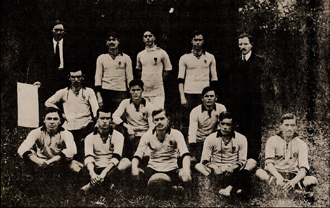

História
Fundado em 1º de setembro de 1910, por um grupo de operários no bairro do Bom Retiro, em São Paulo, o Corinthians nasceu com uma proposta revolucionária: ser um time do povo. Inspirados pelo Corinthian Football Club, da Inglaterra, os fundadores — entre eles Joaquim Ambrósio e Miguel Bataglia — deram início à trajetória de um clube que, ao longo do século XX, se tornaria símbolo de paixão, resistência e pertencimento.
Títulos
O Corinthians é um dos clubes mais vitoriosos do futebol brasileiro, com uma vasta coleção de títulos
nacionais e internacionais. Entre os principais troféus conquistados estão:
- 7 Campeonatos Brasileiros (1990, 1998, 1999, 2005, 2011, 2015, 2017)
- 3 Copas do Brasil (1995, 2002, 2009)
- 2 Copas Libertadores da América (2012, 2020)
- 2 Mundiais de Clubes da FIFA (2000, 2012)
- 30 Campeonatos Paulistas
Elenco
O elenco do Corinthians é composto por jogadores talentosos e dedicados, que representam o clube com orgulho e paixão. Alguns dos principais jogadores do atual elenco incluem:
- Hugo Souza (goleiro)
- Mateuzinho (lateral-direito)
- André Ramalho (zagueiro)
- Félix Torres (zagueiro)
- Fabrizio Angileri (lateral-esquerdo)
- Martínez (meio-campista)
- Ranielle (meio-campista)
- Memphis Depay(atacante)
- Yuri Alberto (atacante)